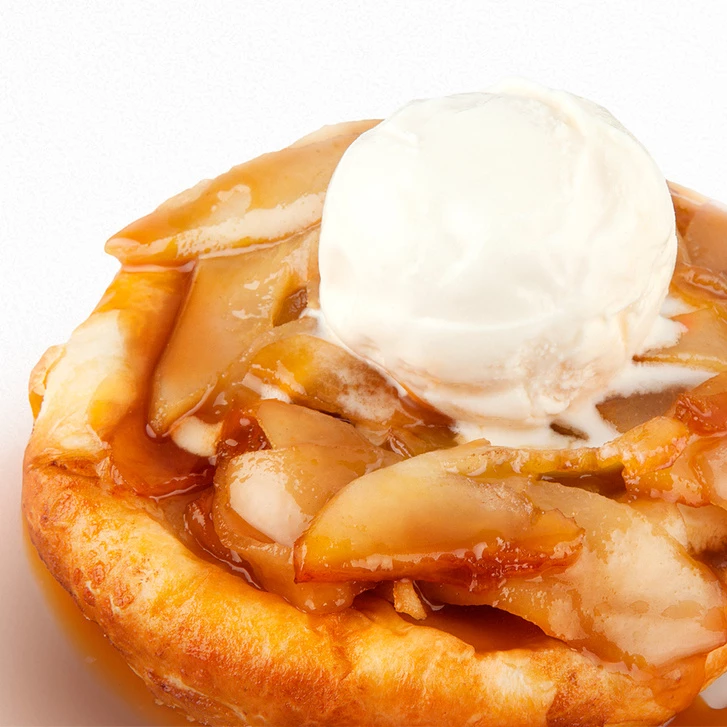

РЕЦЕПТ БЕЗУМНО ВКУСНОГО ГРУШЕВОГО ПИРОГА
На День Рождения мужа мы ходили в ресторан
"ХЛЕБ И НИНО"
и в первые попробовали их фирменный
Грушевый пирог.
Вернувшись домой, мы обязаны были его повторить! И у нас получилось! Теперь мы готовы рассказать:

Рецепт Грушевого пирога
Нам понадобится:
- Слоенное бездрожевое тесто
- Сезонные груши
- Корица + другие пряные приправы по желанию
- Карамельный сироп
- Ванильное мороженое
Все граммовки на глаз :)
Этапы:
- Прямоугольные пласты слоенного теста запечь в духовке примерно 20-30 минут до полной готовности.
- Груши нарезать на слайсы, посыпать корицей и отдельно от теста запечь 15-20 минут. Тесто и груши можно
запекать одновременно в духовке, но на разных уровнях.
- Далее выкладываем на тарелку пласт теста, сверху пряные груши и обильно поливаем карамельным сиропом.
- Завершающий этап -это сверху на груши положить шарик ванильного мороженного. Грушевый пирог готов!
ПРИЯТНОГО АППЕТИТА ^^